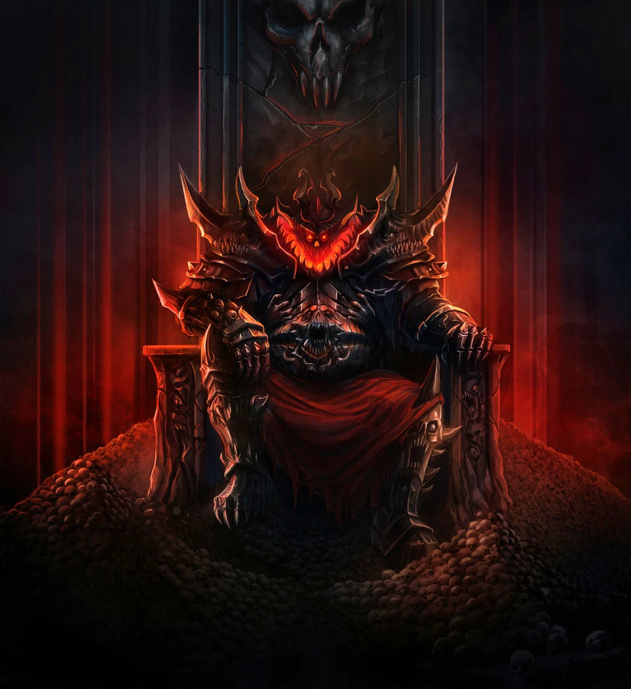

Khorne
Khorne
Titles
Blood God,
Lord of Skulls,
Kharneth (Dark Tongue),
Lord of Blood,
Lord of Rage,
Lord of Battle,
Hunter of Souls,
Taker of Skulls
Sacred Number
8
Khorne is the Chaos God of war, hatred, rage, wrath, blood, martial honour, strength and murder. Its portfolio of interest covers the most basic and brutal of sentient emotions and actions, such as hate, anger, rage, the desire for destruction and the joy of killing one's enemies.
Every act of killing or murder in the material universe feeds and empowers Khorne; the more senseless and destructive, the better. However, though Khorne is the god of bloody slaughter, it is also the god of martial pride and honour, of those who set themselves against the most dangerous foes and earn victory against the odds.
A devotee of Khorne is as likely to be an honourable champion in combat as a blood-crazed slaughterer. Khornates take no artful approach to killing, seeking only to slay rather than to inflict pain, because while the blood and death of their victims strengthens Khorne, their suffering actually empowers its nemesis Slaanesh.
The name "Khorne" derives from the god's name in Chaos' Daemonic Dark Tongue, Kharneth, meaning "Lord of Rage" or "Lord of Blood." Khorne is the mightiest and the oldest of the four major Chaos Gods, fully coming into existence in the Immaterium sometime during Terra's European Middle Ages in the early 2nd Millennium, its birth heralded by an era of wars and conflict that raged across the globe.
Khorne is the Blood God, Lord of Rage, Taker of Skulls. It is wrath incarnate, the embodiment of a never-ending lust to dominate and destroy. It is Khorne's sole desire to drown the galaxy in a tide of slaughter, to conquer and kill every living thing until there is nothing left but spilt blood and shattered bone.
The code of Khorne is simple: blood and more blood. Its only temple is the battlefield, its sole sacrament the spilled blood of nations. Consciously or not, all warrior cultures pay Khorne homage with their acts of murder and destruction, from the headhunting tribes of backwater Feral Worlds to the planet-conquering Chaos Space Marine warbands of the World Eaters Traitor Legion.
Every single life taken in anger increases the Blood God's power. It looks well upon those warriors who slay their friends and allies, for they prove their understanding of a greater truth -- Khorne cares not from whence the blood flows, only that it flows. Friends or enemies, all the dead are equal in the eyes of the Lord of Battle. Those Khornate devotees who let a day pass without committing an act of bloody-handed slaughter inevitably incur the Blood God's displeasure.
Khorne is said to have inherited a martial nobility and honour, and considers the weak and helpless to be unworthy of its wrath. The battle-cry of the followers of Khorne reflects the god's desire for wanton violence: "Blood for the Blood God! Skulls for the Throne of Khorne!" Alternatively, they may cry, "Skulls for the Skull Throne!"
In the throes of violence, Khorne's followers are also known to bellow, "KILL! MAIM! BURN!" repeatedly while hacking apart their enemies. Also, the Khornate Berserkers known as Khorne's Chosen often shout "Break their backs!" while in the thick of the brutal, bloody battle they so passionately seek out.
Followers of the Chaos God Slaanesh, who Khornates see as degenerate scum who kill only for pleasure rather than to test one's self against mighty enemies, are favoured foes to face in battle, as are the servants of Tzeentch, who are seen as sorcerers unwilling to engage in fair and honourable combat.
Khorne's sacred number is eight, reflected in the organisation of the god's Daemonic armies, the Blood Legions, and in smaller matters such as the number of syllables in a Khornate Daemon's name. Where possible, the Blood God's warriors will form up into squads of this number.
Khorne's primary colours are blood red, black and brass. Also note that the Mark of Khorne looks vaguely like a figure of eight or a stylised Human skull.